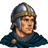
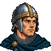
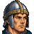
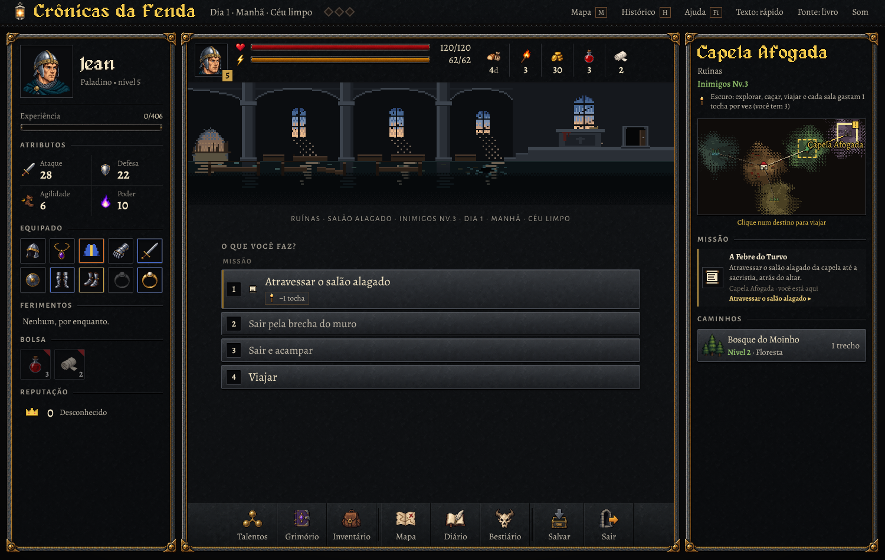
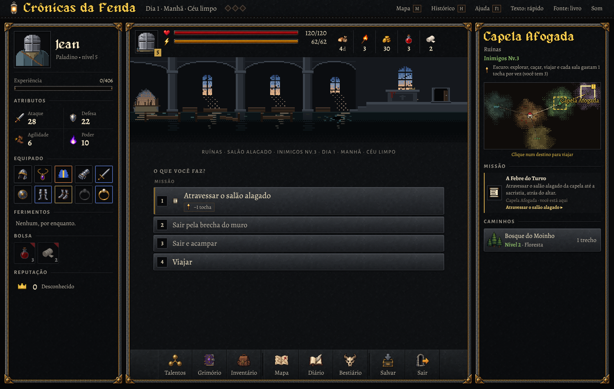
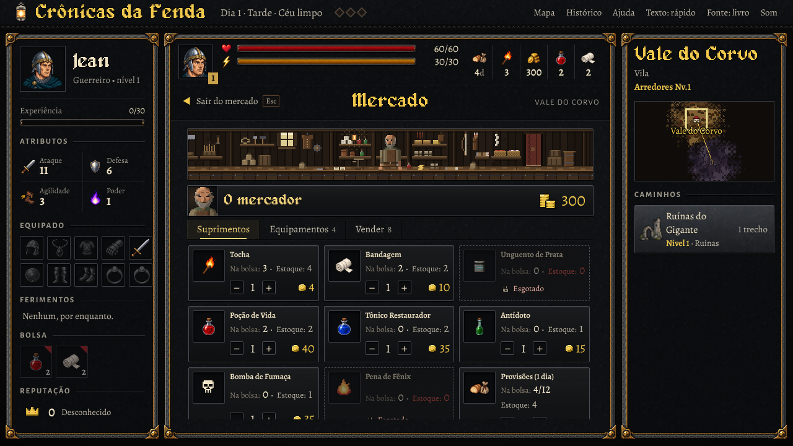
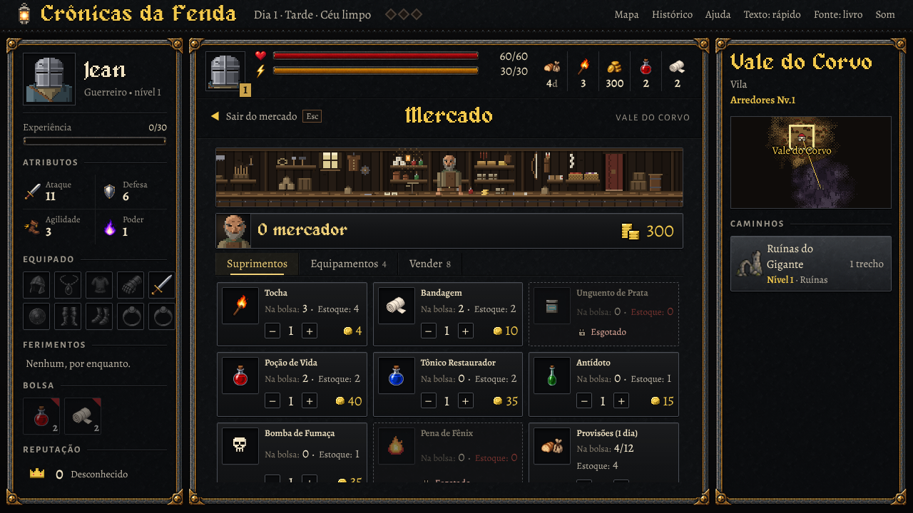
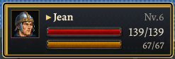
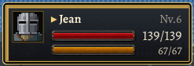

Candidato para avaliação, desenhado em código pelo método do mercador e das cenas (arte-teste.js): um desenho só de 40×40 pixels de arte, com o busto da ficha inteiro e os recortes para a janela baixa e o topo; a carta da luta tem uma versão de 16×16 com a mesma silhueta. Em cima de cada par, o retrato gerado que está hoje na HUD. O jogo não mudou: as fotografias de baixo foram tiradas com o candidato posto só na página fotografada.








